Ufficio e responsabili di produzione: utenti e postazioni, articoli e cicli, ordini di produzione, avanzamento, conto lavoro, riordini, giacenze da Mexal ed email automatiche.
Versione {{DATA}} · Le procedure di chi lavora alle macchine sono in Procedure operatore. I PDF si aprono da EssentiaMES: icona Account in basso a destra.
Indice
1Il menudove si trovano le funzioni
2Creare un operatoreutente, password, cancellazione
3Associare l'operatore alla macchinapostazione di lavoro
4Articoli e cicli di lavorocicli automatici e articoli senza affilatura
5Creare un ordine di produzione (ODP)dalla Dashboard Giacenza
6Seguire la produzioneCentro di controllo, Storico, scheda macchina
Account: password, uscita e questi manuali in PDF.
2Creare un operatore
Quando: arriva un nuovo operatore, oppure un operatore ha dimenticato la password.
Menu Fabbrica → Dashboard Utenti, scheda Gest. Account.
Premi Crea Utente. Inserisci il nome utente (es. mario.rossi), l'email se c'è e una password iniziale (almeno 6 caratteri, con maiuscola, minuscola, numero e simbolo).
Come Ruolo scegli Operatore (postazione macchina). Premi Crea Utente.
Associa l'operatore alla sua macchina (capitolo 3) e comunicagli utente e password iniziale. Al primo accesso la cambierà dalla pagina Account.
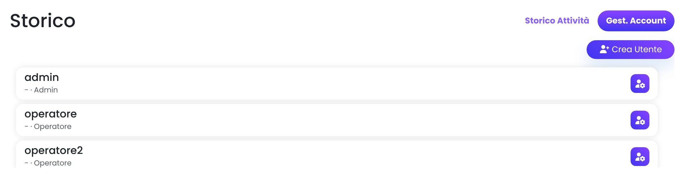
Elenco utenti: il pulsante a destra apre la gestione dell'utente.
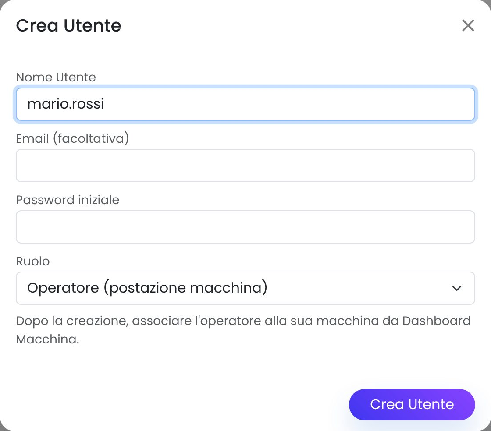
Creazione di un operatore.
Password dimenticata o utente da eliminare
Nella scheda Gest. Account premi il pulsante a destra dell'utente. Con Reimposta password assegni una nuova password; con Cancella utente elimini l'utente, ma lo storico dei suoi ordini resta.
3Associare l'operatore alla macchina
Perché: l'operatore vede solo le attività della macchina a cui è associato. Senza associazione riceve il messaggio “Nessuna macchina associata”.
Menu Fabbrica → Dashboard Macchina.
Sulla riga della macchina premi l'icona Modifica (matita).
In Utente (operatore della postazione) scegli l'operatore, poi premi Salva.
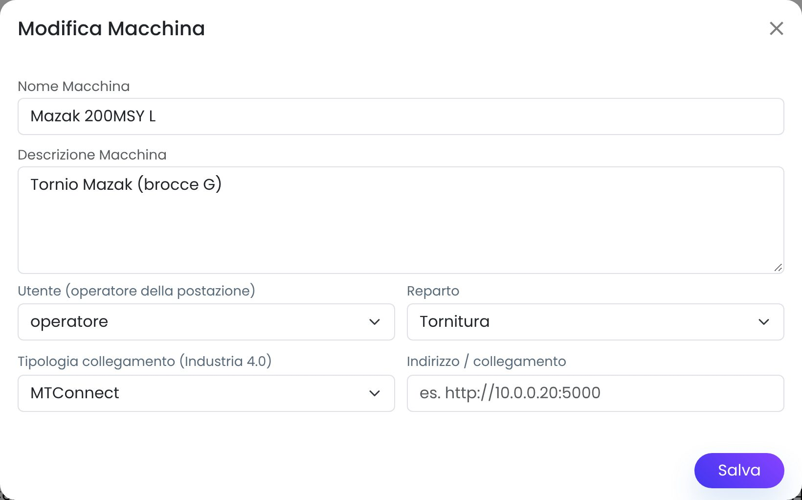
Modifica macchina: campo “Utente (operatore della postazione)”.
Cambio turno o cambio macchinaOgni macchina ha un utente di postazione. Se più persone lavorano sulla stessa macchina in turni diversi, si può usare un utente di postazione condiviso. In quel caso tempi e quantità restano registrati sulla macchina, senza distinzione di persona.
4Articoli e cicli di lavoro
Ciclo di lavoro = la sequenza di fasi che un articolo attraversa: lavorazioni sulle macchine alternate a versamenti nei magazzini intermedi. Ogni ODP copia il ciclo dell'articolo.
Nuovo articolo
Menu Carrello → Dashboard Articoli, pulsante Crea Articolo.
Compila codice, descrizione, importanza, famiglia e lotto minimo, poi premi Salva.
Per i codici che iniziano con G, GT, GP, PCM, SG… o che contengono B, il ciclo standard viene creato in automatico. Il messaggio di conferma indica quante fasi sono state create.
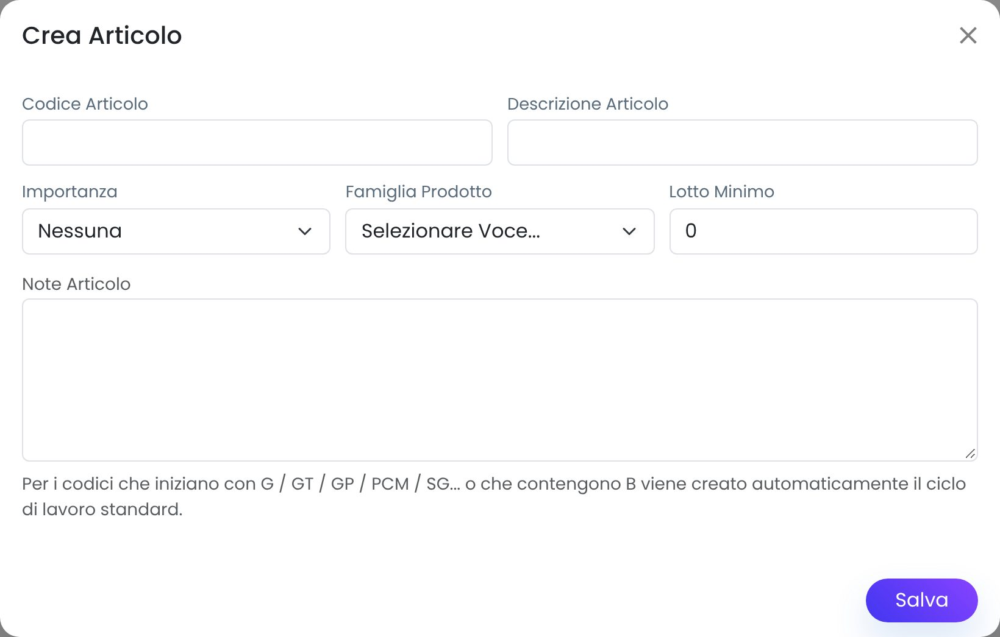
Articoli che NON vanno in affilaturaSe il codice o la descrizione contengono HDRED, TIN, WONDER, WOND, ZIRI o INOX, il ciclo viene creato senza affilatura: l'ultimo versamento va direttamente al magazzino Finito. L'elenco delle parole si cambia in Automazioni → Cicli di lavoro.
Vedere e correggere un ciclo
Menu Fabbrica → Cicli di lavoro: scrivi il codice esatto e premi Filtra. Con le icone puoi modificare o eliminare una fase; con Nuova fase la aggiungi. Le modifiche valgono per i nuovi ODP, non per quelli già creati.
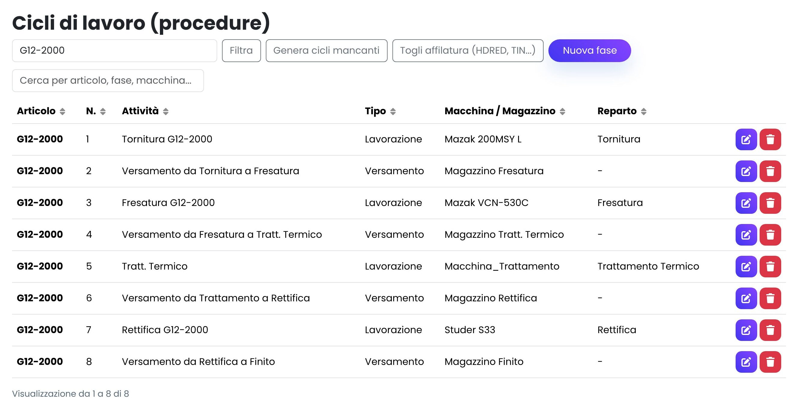
Ciclo di un articolo “TiN”: 8 fasi, senza affilatura.
Pulsante
Cosa fa
Genera cicli mancanti
Crea il ciclo per tutti gli articoli che non ne hanno uno: ciclo G o B in base al codice, altrimenti quello generico. Gli articoli con le parole chiave restano senza affilatura. Prima mostra quanti cicli verranno creati e chiede conferma.
Togli affilatura (HDRED, TIN…)
Mostra gli articoli con le parole chiave che hanno ancora l'affilatura nel ciclo. Con la conferma toglie l'affilatura e il versamento che la precede, poi rinumera le fasi. Salta gli articoli con ODP aperti: si può ripetere quando sono chiusi.
5Creare un ordine di produzione (ODP)
Quando: bisogna produrre un articolo. L'ODP crea tutte le fasi del ciclo; la prima compare subito nella lista della sua macchina, le altre si sbloccano una dopo l'altra man mano che gli operatori chiudono le fasi.
Menu Carrello → Dashboard Giacenza.
Premi + Crea ODP in alto, oppure l'icona Crea ODP sulla riga dell'articolo.
Scegli il Codice Articolo, inserisci la Quantità da produrre e premi Crea ODP.
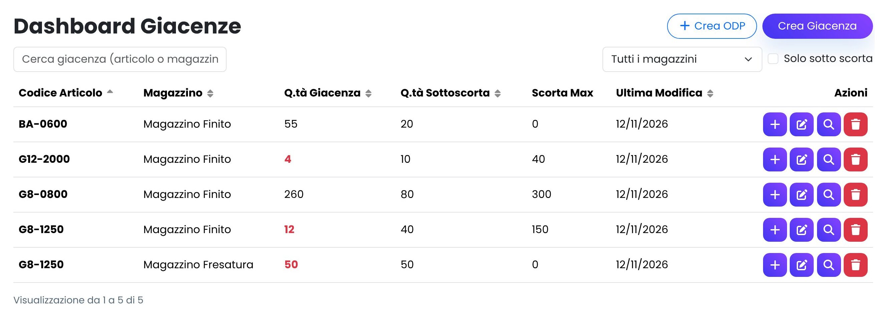
Dashboard Giacenza: in rosso le giacenze sotto la scorta minima.
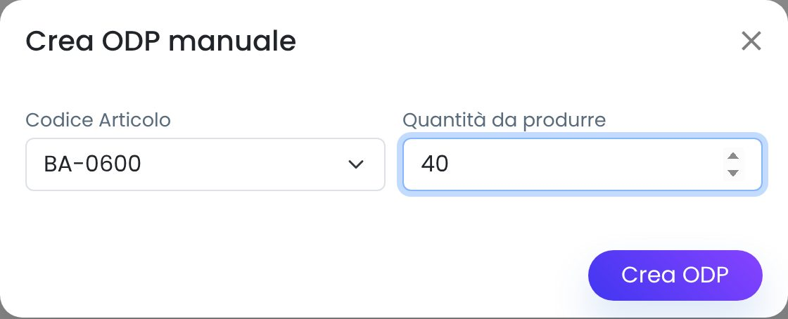
Creazione manuale di un ODP.
Numero dell'ODPL'ODP ha il formato gg/mm/aaaa_N: data di creazione e numero della prima fase del ciclo. Lo trovi nello Storico, nel Centro di controllo e nella mail serale degli ODP.
Serve il cicloSe l'articolo non ha un ciclo di lavoro, l'ODP non viene creato: compare il messaggio “Nessun ciclo di lavoro definito”. Crealo prima (capitolo 4).
6Seguire la produzione
Centro di Controllo (menu Tachimetro)
Riquadri con i numeri della giornata: articoli sotto scorta senza ordine, ODP fermi, proposte di riordino da valutare, attività sospese, ordini in arrivo, lotti non rientrati, fasi in attesa. Sotto ci sono il flusso di produzione per reparto e gli elenchi delle cose da seguire.
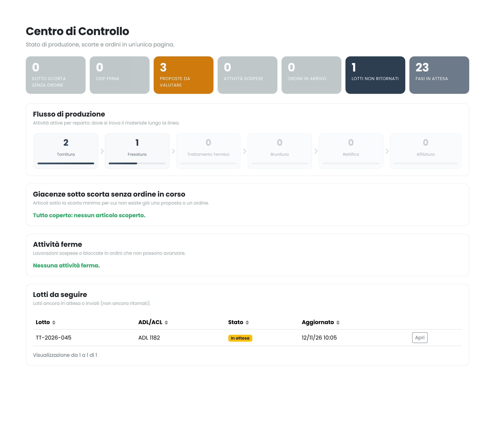
Storico e dettaglio ODP (Fabbrica → Dashboard Utenti)
La scheda Storico Attività elenca gli ODP con attività aggiornate negli ultimi 7 giorni. Il pulsante a destra apre il dettaglio: fase per fase, stato, quantità prodotte e scartate, tempi di lavorazione e di attrezzaggio, note, allegati e percentuale di completamento.
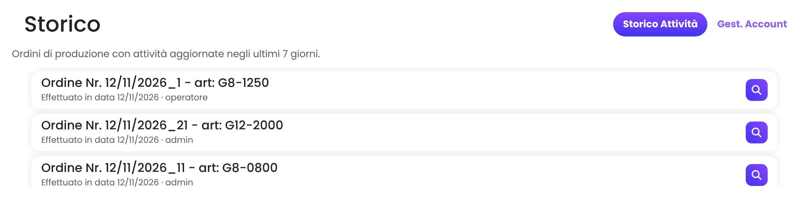
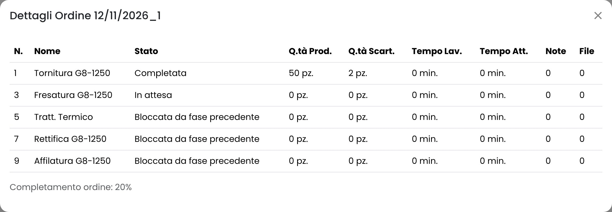
Scheda della macchina
Si apre toccando il nome della macchina in Fabbrica → Dashboard Macchina, oppure il pin nella planimetria della Dashboard. Mostra note, documenti e attività in attesa della macchina. Le attività che l'operatore ha nascosto compaiono con l'etichetta Nascosta dall'operatore. Se una fase davvero non va fatta, correggi il ciclo dell'articolo invece di lasciarla nascosta.
7Conto lavoro e lotti
A cosa servono: seguire il materiale che esce verso un terzista (es. trattamento termico) e rientra. Il lotto raccoglie gli articoli, le quantità, il fornitore e il documento ADL/ACL.
Menu Carrello → Dashboard Lotti. Un lotto si crea con Crea Lotto, oppure in automatico alla chiusura di una fase, se l'automatismo è attivo in Automazioni.
Con l'icona Modifica, nella scheda Anagrafica imposti fornitore, ADL/ACL e Stato Lotto; nella scheda Articoli gli articoli e le quantità.
Aggiorna lo stato quando il materiale si muove: In Attesa → Inviato (partito dal terzista) → Ritornato da C/O (rientrato).
Con l'icona Excel scarichi il documento del lotto da allegare alla spedizione.
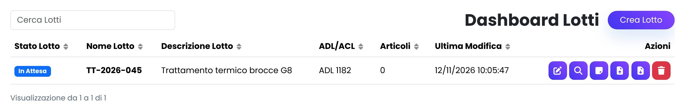
Dashboard Lotti.
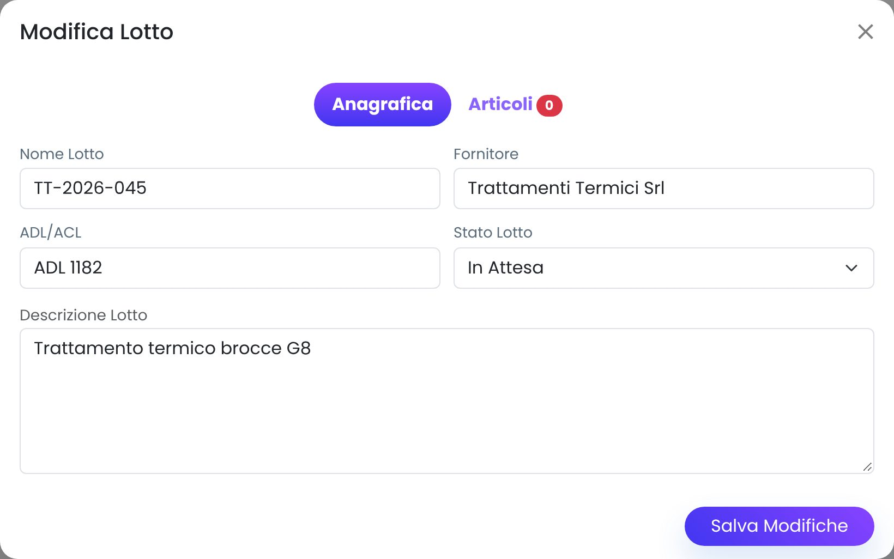
Modifica del lotto: stato e fornitore.
Rientro del materialeSe in Automazioni è attivo “sblocca la fase successiva”, quando il lotto passa a Ritornato da C/O la fase successiva degli articoli del lotto si sblocca da sola e compare nella lista della macchina. Se l'articolo ha più ordini bloccati non viene sbloccato nulla, per evitare errori: in quel caso la riga resta nel Log.
8Riordino automatico
Come funziona: ogni sera alle 20:30 EssentiaMES controlla le giacenze. Per gli articoli con giacenza + quantità in arrivo uguale o inferiore alla scorta minima crea una proposta di riordino, fino alla scorta massima (o al doppio della minima) e arrotondata al lotto minimo. Non ordina nulla da solo.
Al mattino apri Robot → Ordini Automatici.
Per ogni proposta premi Conferma se va ordinata, oppure Annulla se non serve. L'ordine vero e proprio si fa come sempre (Mexal, fornitore, produzione interna).
Quando il materiale arriva premi Segna evaso. Finché una proposta è aperta, per quell'articolo non ne vengono create altre.
G8A esclusiGli articoli con codice che inizia per G8A non generano proposte (“Prefissi esclusi”). Per includerli di nuovo svuota il campo e premi Salva parametri. “Genera proposte ora” lancia il controllo subito.
9Giacenze da Mexal
Come funziona: ogni sera alle 20:00 EssentiaMES legge le giacenze dal database di Mexal (Mexal_Frontier) e aggiorna le sue. Mezz'ora dopo il riordino automatico lavora quindi su dati aggiornati.
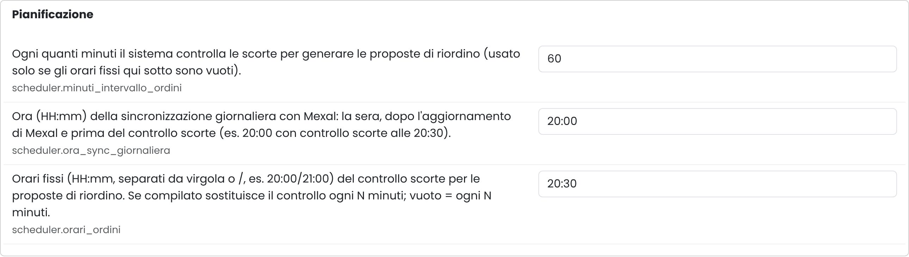
Automazioni → Pianificazione: orari della sincronizzazione Mexal e del controllo scorte.
Per una sincronizzazione immediata: Robot → Sincronizzazione Mexal → Sincronizza ora. Il risultato indica le righe lette, aggiornate, create e ignorate (articoli di Mexal che non esistono in EssentiaMES).
Interruttore, ora e vista di Mexal si impostano in Robot → Automazioni, sezioni Sincronizzazione Mexal e Pianificazione. Dopo ogni modifica premi Salva parametri.
10Email automatiche
Email
Contenuto
Quando
ODP del giorno
ODP creati e ODP lavorati nella giornata: articolo, quantità, fasi chiuse, fase attuale con macchina, ore di attrezzaggio e lavorazione. In alto i totali e gli ODP ancora aperti.
ogni giorno alle 20:30
Uso delle macchine
Per ogni macchina: ore di attrezzaggio e lavorazione registrate negli ultimi 7 giorni, percentuale su un turno di 8 ore, giorni con attività, fasi, ODP e ultimo utilizzo. In rosso le macchine mai usate su EssentiaMES nel periodo.
il venerdì alle 20:30
Menu Robot → Automazioni, sezione Email automatiche: scrivi i destinatari separati da virgola, controlla ora e giorno e premi Salva parametri.
Accendi gli interruttori delle due email.
Nella sezione Email automatiche: anteprima e invio di prova controlla il contenuto (Anteprima, non invia nulla) e fai una prova con Invia ora, se vuoi verso un indirizzo diverso.
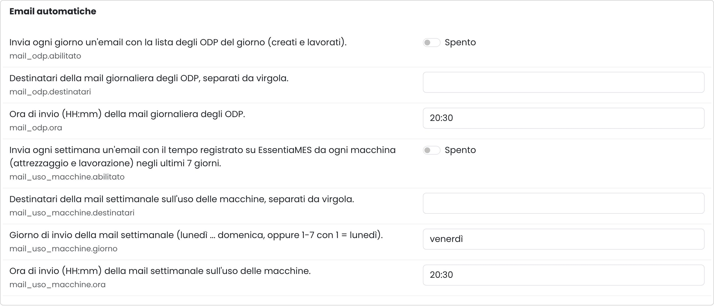
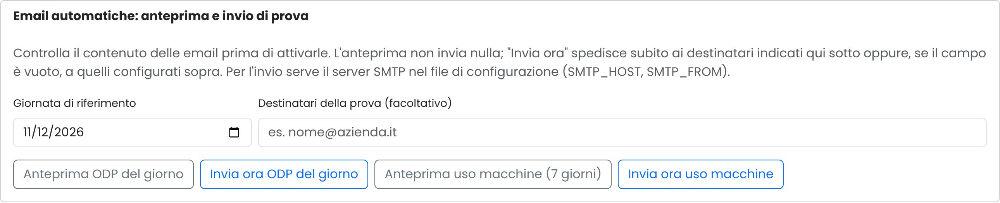
Anteprima e invio di prova.
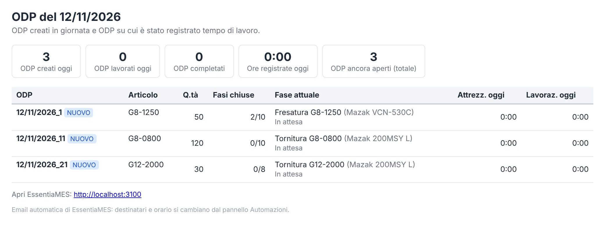
Anteprima della mail ODP del giorno.
Se la mail non arrivaServe il server di posta configurato dall'informatico nel file di configurazione di EssentiaMES. Ogni invio, riuscito o no, viene registrato nel Log con il motivo dell'eventuale errore.
11La giornata tipo
Quando
Cosa
Mattina
Centro di Controllo: attività ferme, fasi in attesa, lotti da seguire. Ordini Automatici: conferma o annulla le proposte della sera prima. Crea gli ODP del giorno.
Durante il giorno
Gestisci i lotti (Inviato, Ritornato da C/O) e rispondi alle note degli operatori sulle macchine.
20:00(automatico)
Sincronizzazione delle giacenze da Mexal.
20:30(automatico)
Controllo scorte e proposte di riordino (senza G8A), poi la mail con gli ODP del giorno.
Venerdì 20:30(automatico)
Mail con l'uso delle macchine della settimana: le macchine con poche ore o in rosso vanno verificate con i rispettivi operatori.
12Manutenzione
Backup e pulizia delle attività: lo script database\pulizia-attivita.sql, eseguito in SSMS sul database di EssentiaMES, fa un backup completo verificato, archivia attività e tempi nelle tabelle Archivio_Brighetti_* e poi li cancella. Va lanciato a produzione ferma. Articoli, cicli, giacenze e lotti non vengono toccati.
Attività nascoste: ogni tanto controlla nelle schede delle macchine le attività “Nascosta dall'operatore” e sistema i cicli che generano fasi inutili.
Aggiornamenti di EssentiaMES: li installa l'informatico con AGGIORNA.cmd. Configurazione e dati restano invariati.